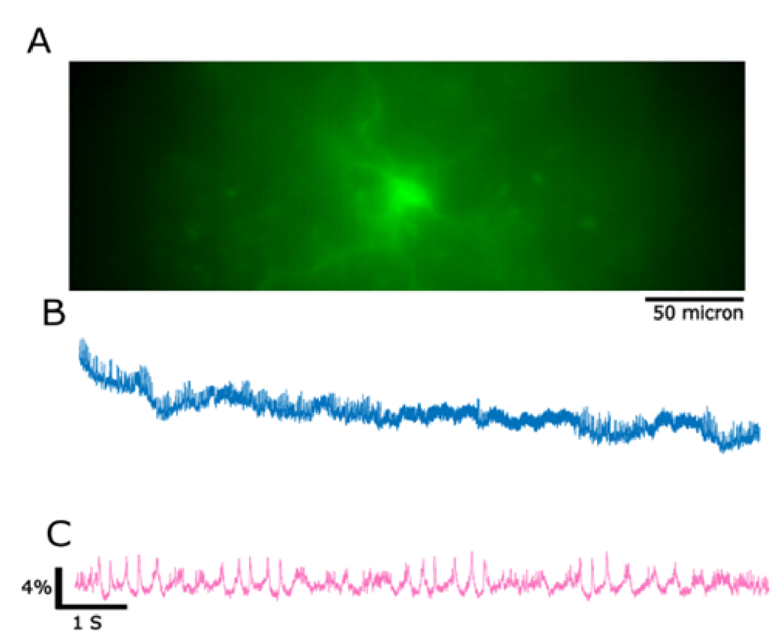
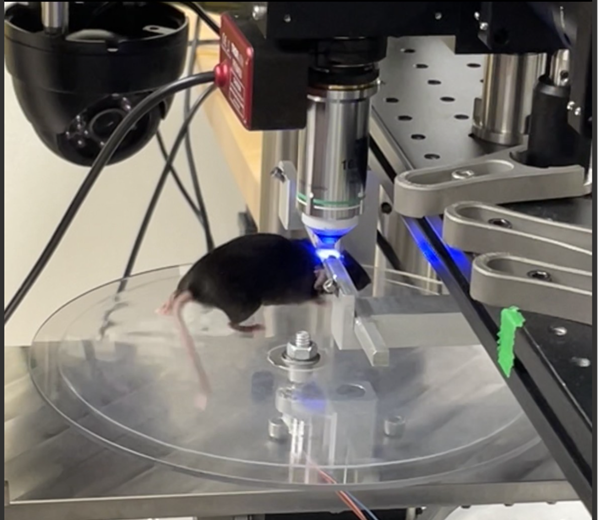
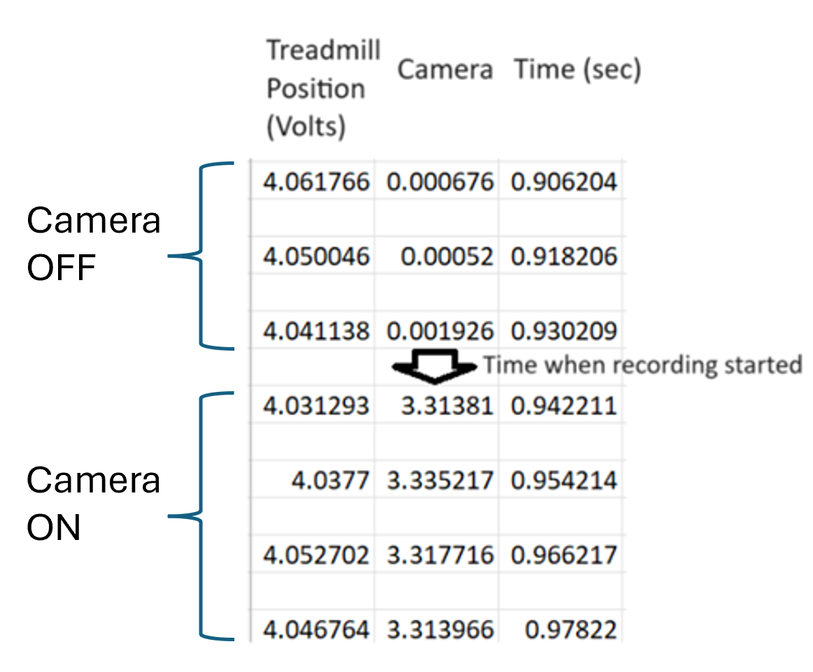
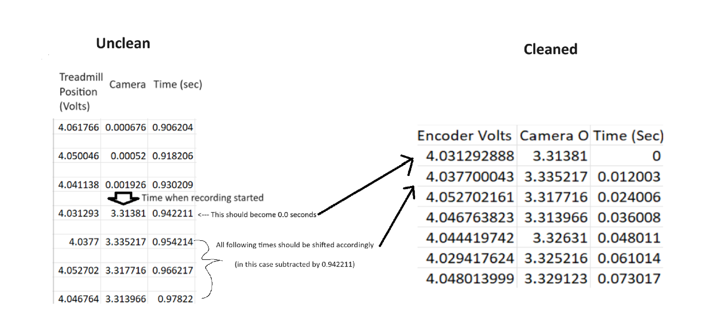
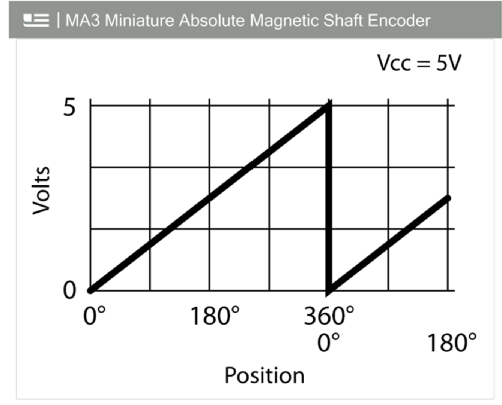

# Import statements
import pandas as pd
import matplotlib.pyplot as plt
import osAutomated Treadmill Data Cleaning
Introduction
This was the final project for my BIOS 6644 Data Wrangling course.
In this project, we create a program to automate the data cleaning of vital mouse treadmill data needed to validate Genetically Encoded Voltage Indicators for visualizing neuronal activity, exponentially saving experimenter time on manually cleaning data files and greatly expediting the data analysis process.
The result is a program that takes a few seconds to perform what would otherwise take 1-2 hours per recording session to clean by hand!
Background
Genetically Encoded Voltage Indicators (GEVIs) are powerful tools in neuroscience that allow researchers to visualize neuronal activity with high spatial and temporal resolution.
GEVIs are designed to be expressed in specific neurons, where they can report changes in membrane potential. They typically consist of a voltage-sensitive domain fused to a fluorescent protein. When the voltage across the neuron’s membrane changes, the GEVI undergoes a conformational change that alters its fluorescence intensity, allowing researchers to track electrical activity in real-time (1).
In brief, mice undergo a surgery in which the GEVI is injected into the target region of the brain (motor cortex in this case). After allowing time to heal, a highly specialized microscope is used to image these target neurons with a specific wavelength of light that allows us to visualize neuronal firing in real-time
Additionally, GEVIs enable sub-millisecond fidelity recording of neuronal activity, capturing electrical signals with temporal resolution on the order of 1-2 milliseconds. This is significantly faster than traditional fluorescent imaging vectors like GFP, which typically offer temporal resolutions on the scale of 100 milliseconds (1).
Thus, the promise of GEVI’s is great, but this comes with a concomitant technological and engineering challenge!
My lab aimed to create the first 1-photon miniature microscope that would allow for voltage recordings in freely moving mice. We had made great progress towards this goal.
However, a big challenge arose!
The Motivator
At this point, we had successfully expressed and captured neuronal activity in a single VIP+ neuron using a GEVI, which can be seen here.

However, we now needed to validate these signals against a control. That is, we needed to prove that we were capturing real voltage signals.
One approach to this problem was to perform voltage imaging with a GEVI in the motor cortex and correlate that activity to a physiological indicator of movement - mice walking on a treadmill. The idea is simple: If we were capturing true voltage signals, we would see spikes every time the mice walked.
Thus, we created a paradigm where we could image mice while they walked on a treadmill. (This experimental set-up would also allow for further experiments down the road of particular interest to my lab, such as documenting the relationships between inhibitory interneurons during locomotion).
This experimental set up can be seen here.

The Problem
We had successfully created a paradigm where we could perform voltage imaging on freely moving mice. However, the data we were receiving would have to be cleaned before we could do anything with it!
Specifically the recording on the treadmill was beginning before the recording on the camera. This resulted in treadmill files that were capturing data when the camera was turned off at both at the beginning and end of each treadmill file.
This can be visualized here.

Thus, the treadmill data would have to be cleaned in order for the treadmill and camera recordings to be synchronized with each other.
Planning The Code
With the background and motivation for the program detailed, we can now move to the code itself.
Outline
As can be seen in the previous image, the recording software for the camera was detecting the timepoint that the camera was turned on as a change from 0 to ~3 Volts. This is the timestamp that we will use to sychronize the treadmill data with the camera recordings.
To do so, we need all of the treadmill recordings to have this timepoint where the camera switches from 0 to 3 Volts as timestamp 0.00 seconds.
This will also have to be done en masse, to clean as many treadmill files as needed simultaneously.
Pseudo Code
Thus, the pseudo code for the program is laid out as follows:
Iterate through all the treadmill.xlsx’s in a specified folder.
In each treadmill.xlsx:
Delete every second row (since these are empty rows)
Check the second column of the treadmill.xlsx (which detects when the Camera was turned on)
Only consider rows where the camera was turned on (i.e. the “Camera On/Off” value > 3)
Consider the first row as time stamp 0.
From that point on, all remaining time stamps will be shifted by x seconds, where x is the timestamp where the camera was turned on.
Save the .xlsx in a new folder with the exact same file name but appended with the suffix “_cleaned.xlsx”.
This process can be visualized below.

Developing the Program
First we will define our import statements.
And then import an example treadmill.xlsx file
# Define column names
col_names = ["Treadmill Position (V)", "Camera On/Off", "Time (sec)"]
# Import treadmill data as a pd df, set column names to col_names
treadmill = pd.read_excel(r"C:\Users\sviea\Documents\Portfolio\Data_Wrangling\Treadmill_Data_Cleaning\Treadmill Files Uncleaned\121523_RC1_Pace_1.xlsx", names = col_names)
# Examine the df
treadmill| Treadmill Position (V) | Camera On/Off | Time (sec) | |
|---|---|---|---|
| 0 | NaN | NaN | NaN |
| 1 | 2.479051 | -0.000417 | 0.075016 |
| 2 | NaN | NaN | NaN |
| 3 | 2.474206 | 0.000364 | 0.087019 |
| 4 | NaN | NaN | NaN |
| ... | ... | ... | ... |
| 6657 | 4.912201 | -0.000574 | 40.457479 |
| 6658 | NaN | NaN | NaN |
| 6659 | 4.916733 | 0.000833 | 40.469482 |
| 6660 | NaN | NaN | NaN |
| 6661 | 4.923141 | -0.000105 | 40.481484 |
6662 rows × 3 columns
Removing Empty Rows
As mentioned previously, every other row of these files is blank. Let’s drop those NaN values.
# Drop NaN values
treadmill = treadmill.dropna()
treadmill| Treadmill Position (V) | Camera On/Off | Time (sec) | |
|---|---|---|---|
| 1 | 2.479051 | -0.000417 | 0.075016 |
| 3 | 2.474206 | 0.000364 | 0.087019 |
| 5 | 2.462798 | -0.000261 | 0.099022 |
| 7 | 2.468580 | 0.000208 | 0.111025 |
| 9 | 2.473425 | -0.000730 | 0.123027 |
| ... | ... | ... | ... |
| 6653 | 4.900325 | 0.000051 | 40.433474 |
| 6655 | 4.910170 | 0.000520 | 40.445477 |
| 6657 | 4.912201 | -0.000574 | 40.457479 |
| 6659 | 4.916733 | 0.000833 | 40.469482 |
| 6661 | 4.923141 | -0.000105 | 40.481484 |
3331 rows × 3 columns
Looks good.
Filtering to When Camera was On
Now let’s filter down to only time points when the camera was turned on.
# Slice the treadmill df so it only includes values where the camera was turned on (i.e. value > 3)
treadmill = treadmill[treadmill["Camera On/Off"] > 3]
treadmill| Treadmill Position (V) | Camera On/Off | Time (sec) | |
|---|---|---|---|
| 145 | 2.474988 | 3.324904 | 0.939210 |
| 147 | 2.461392 | 3.327091 | 0.951213 |
| 149 | 2.472487 | 3.317091 | 0.963216 |
| 151 | 2.479988 | 3.322404 | 0.975219 |
| 153 | 2.476550 | 3.325373 | 0.987221 |
| ... | ... | ... | ... |
| 5071 | 1.836623 | 3.321466 | 30.937171 |
| 5073 | 1.834592 | 3.323810 | 30.949173 |
| 5075 | 1.848500 | 3.335060 | 30.961176 |
| 5077 | 1.839905 | 3.326779 | 30.973179 |
| 5079 | 1.823340 | 3.320216 | 30.985182 |
2468 rows × 3 columns
We can see that we now only have observations where the 2nd column contains values greater than 3 (i.e. the camera was turned ON).
Resetting First Time Point to Zero
# Set the first Time (sec) value to 0
time_start = treadmill["Time (sec)"].iloc[0]
# Delete all Time (sec) values by the starting time
treadmill["Time (sec)"] = treadmill["Time (sec)"] - time_start
treadmill| Treadmill Position (V) | Camera On/Off | Time (sec) | |
|---|---|---|---|
| 145 | 2.474988 | 3.324904 | 0.000000 |
| 147 | 2.461392 | 3.327091 | 0.012003 |
| 149 | 2.472487 | 3.317091 | 0.024006 |
| 151 | 2.479988 | 3.322404 | 0.036008 |
| 153 | 2.476550 | 3.325373 | 0.048010 |
| ... | ... | ... | ... |
| 5071 | 1.836623 | 3.321466 | 29.997960 |
| 5073 | 1.834592 | 3.323810 | 30.009963 |
| 5075 | 1.848500 | 3.335060 | 30.021966 |
| 5077 | 1.839905 | 3.326779 | 30.033968 |
| 5079 | 1.823340 | 3.320216 | 30.045971 |
2468 rows × 3 columns
Converting Treadmill Position from Volts to Degrees
It might easier to deal with/conceptualize the treadmill position as degrees of a circle instead of volts in the future. That way we can calculate distance over time later using the radius of the circle.
For reference, the magnetic encoder that the treadmill is attached to captures position in volts, which can be converted directly into degrees of a circle.

Let’s make that conversion now instead of later.
# The highest value for Treadmill Position (in Volts) gets designated as 360 degrees, or the end of the circle
circle_360 = treadmill["Treadmill Position (V)"].max() # Set 360 as the max value for Treadmill Position (V)
one_volt = 360 / circle_360 # One volt is therefore (360 / the max value for Treadmill Position (V)) degrees (e.g., if the max was 5 volts, then 360 / 5 = 72 degrees, or 1 volt = 72 degrees)
# Create a new column that is the Volts * how many degrees one volt is equal to
treadmill["Treadmill Position (degree)"] = treadmill["Treadmill Position (V)"] * one_volt
treadmill| Treadmill Position (V) | Camera On/Off | Time (sec) | Treadmill Position (degree) | |
|---|---|---|---|---|
| 145 | 2.474988 | 3.324904 | 0.000000 | 174.575180 |
| 147 | 2.461392 | 3.327091 | 0.012003 | 173.616208 |
| 149 | 2.472487 | 3.317091 | 0.024006 | 174.398817 |
| 151 | 2.479988 | 3.322404 | 0.036008 | 174.927905 |
| 153 | 2.476550 | 3.325373 | 0.048010 | 174.685407 |
| ... | ... | ... | ... | ... |
| 5071 | 1.836623 | 3.321466 | 29.997960 | 129.547662 |
| 5073 | 1.834592 | 3.323810 | 30.009963 | 129.404368 |
| 5075 | 1.848500 | 3.335060 | 30.021966 | 130.385382 |
| 5077 | 1.839905 | 3.326779 | 30.033968 | 129.779137 |
| 5079 | 1.823340 | 3.320216 | 30.045971 | 128.610738 |
2468 rows × 4 columns
Looks good. This treadmill file is now fully cleaned.
Saving the Cleaned Data
We will want to save each treadmill file after it is cleaned.
For thorough record keeping, let’s create a subfolder within the folder that the treadmill.xlsx files are found within and store the cleaned files there.
# Name the new folder "Cleaned Treadmill Files", and place it within the folder that the uncleaned treadmill files will all be kept in
new_folder = r"C:\Users\sviea\Documents\Portfolio\Data_Wrangling\Treadmill_Data_Cleaning\Treadmill Files Uncleaned\Cleaned Treadmill Files"
# Make the new folder
os.makedirs(new_folder, exist_ok=True)
# Save the cleaned file to this new folder as an excel file
output_file = os.path.join(new_folder, "Cleaned 1.xlsx")
treadmill.to_excel(output_file, index=False)Create a Function
We just wrote code to import, clean, and save a single treadmill.xlsx file.
For the final product, we need to make a program that walks through every uncleaned treadmill file in a folder and cleans it.
To that end, we need to convert the file-cleaning-and-saving steps into a single function, that we can then apply to multiple files en masse.
# Making a function to clean a single treadmill.xlsx file
def treadmill_cleaner(file_path, save_location):
'''
This function cleans a single treadmill.xlsx file
And saves it in the save_location folder
'''
#Import the File
col_names = ["Treadmill Position (V)", "Camera On/Off", "Time (sec)"] # Define column names
treadmill = pd.read_excel(file_path, names = col_names) # Import treadmill data as a pd df, set column names to col_names
# Clean the File
treadmill = treadmill.dropna() # Drop NaN values
treadmill = treadmill[treadmill["Camera On/Off"] > 3] # Slice the treadmill df so it only includes values where the camera was turned on (i.e. value > 3)
time_start = treadmill["Time (sec)"].iloc[0] # Set the first Time (sec) value to 0
treadmill["Time (sec)"] = treadmill["Time (sec)"] - time_start # Delete all Time (sec) values by the starting time
circle_360 = treadmill["Treadmill Position (V)"].max() # Set 360 as the max value for Treadmill Position (V)
one_volt = 360 / circle_360 # One volt is therefore (360 / the max value for Treadmill Position (V)) degrees (e.g., if the max was 5 volts, then 360 / 5 = 72 degrees, or 1 volt = 72 degrees)
treadmill["Treadmill Position (degree)"] = treadmill["Treadmill Position (V)"] * one_volt
# Save the Cleaned File
output_file = os.path.join(save_location, filename) # Generates the name of the output file (save location + file_name)
base_name, extension = os.path.splitext(output_file) # Separates the file name to be "file_name" and ".xlsx" (modified from ChatGPT)
cleaned_path = f"{base_name}_cleaned{extension}" # Creates a new file name that is "file_name_cleaned.xlsx" (modified from ChatGPT)
treadmill.to_excel(cleaned_path, index=False) # Saves the file and appends "_cleaned" to the end of itThe Final Program
Now that we have the file cleaning and saving steps embedded within a single function, we can apply this function to clean either:
- A single treadmill file
- An entire folder with as many treadmill files as need cleaning!
Clean a Single Treadmill File
If we want to run the program to clean a single file, we can run the code below.
# Change file paths as needed below
filename = "121523_RC1_Pace_1.xlsx" # Change this to what you want the last part of the file name to be!
file_path = r"C:\Users\sviea\Documents\Portfolio\Data_Wrangling\Treadmill_Data_Cleaning\Treadmill Files Uncleaned\121523_RC1_Pace_1.xlsx" # Change this to the file path of the treadmill file you want to clean
save_location = r"C:\Users\sviea\Documents\Portfolio\Data_Wrangling\Treadmill_Data_Cleaning\Treadmill Files Uncleaned\Cleaned Treadmill Files" #Change this to the name of the folder you want to save in
os.makedirs(save_location, exist_ok=True) # Makes the save_location as a new folder, skips if it already exists
# Run the program to clean a single treadmill file
treadmill_cleaner(file_path, save_location)Clean an Entire Folder Containing Raw Treadmill Files
If we want to clean a folder containing multiple treadmill files, we can run the chunk below.
# This program walks through every file in a designated folder and applies the above treadmill_cleaner() function to each file, saving the cleaned file in the same subfolder
#__Enter the file path to the folder containing treadmill files here!!!!!__
directory = r"C:\Users\sviea\Documents\Portfolio\Data_Wrangling\Treadmill_Data_Cleaning\Treadmill Files Uncleaned"
##### Create the save location as a new folder (if needed)
# Names the save location as the folder containing treadmill files
# + "\Cleaned Treadmill Files"
save_location = f"{directory}" + "\Cleaned Treadmill Files"
# Makes the save_location as a new folder, skips if it already exists
os.makedirs(save_location, exist_ok=True)
print("Save location is:", save_location)
##### Walk through every file in the directory and apply the treadmill_cleaner() function
try: # Made this a try statement so it does not apply to subfolders
for filename in os.listdir(directory):
print("File name is:", filename)
filepath = os.path.join(directory, filename)
print("File path is:", filepath)
treadmill_cleaner(filepath, save_location)
except PermissionError: # Skips subfolders (and anything else really, will throw an error if you have the .xlsx file open!)
print("File is a folder - skipping")<>:9: SyntaxWarning:
invalid escape sequence '\C'
<>:9: SyntaxWarning:
invalid escape sequence '\C'
C:\Users\sviea\AppData\Local\Temp\ipykernel_26968\1169796177.py:9: SyntaxWarning:
invalid escape sequence '\C'
Save location is: C:\Users\sviea\Documents\Portfolio\Data_Wrangling\Treadmill_Data_Cleaning\Treadmill Files Uncleaned\Cleaned Treadmill Files
File name is: 121523_RC1_Pace_1.xlsx
File path is: C:\Users\sviea\Documents\Portfolio\Data_Wrangling\Treadmill_Data_Cleaning\Treadmill Files Uncleaned\121523_RC1_Pace_1.xlsx
File name is: 121523_RC1_Pace_2.xlsx
File path is: C:\Users\sviea\Documents\Portfolio\Data_Wrangling\Treadmill_Data_Cleaning\Treadmill Files Uncleaned\121523_RC1_Pace_2.xlsx
File name is: 121523_RC1_Pace_3.xlsx
File path is: C:\Users\sviea\Documents\Portfolio\Data_Wrangling\Treadmill_Data_Cleaning\Treadmill Files Uncleaned\121523_RC1_Pace_3.xlsx
File name is: 121523_RC1_Pace_4.xlsx
File path is: C:\Users\sviea\Documents\Portfolio\Data_Wrangling\Treadmill_Data_Cleaning\Treadmill Files Uncleaned\121523_RC1_Pace_4.xlsx
File name is: 121523_RC1_Pace_5.xlsx
File path is: C:\Users\sviea\Documents\Portfolio\Data_Wrangling\Treadmill_Data_Cleaning\Treadmill Files Uncleaned\121523_RC1_Pace_5.xlsx
File name is: 121523_RC1_Pace_6.xlsx
File path is: C:\Users\sviea\Documents\Portfolio\Data_Wrangling\Treadmill_Data_Cleaning\Treadmill Files Uncleaned\121523_RC1_Pace_6.xlsx
File name is: Cleaned Treadmill Files
File path is: C:\Users\sviea\Documents\Portfolio\Data_Wrangling\Treadmill_Data_Cleaning\Treadmill Files Uncleaned\Cleaned Treadmill Files
File is a folder - skippingWe just cleaned 6 files in a matter of seconds. That would have taken the better part of an hour to do by hand!
Checking the Output
For good measure, let’s check the output of the first and last file we cleaned.
# Check first file
file_1 = pd.read_excel(r"C:\Users\sviea\Documents\Portfolio\Data_Wrangling\Treadmill_Data_Cleaning\Treadmill Files Uncleaned\Cleaned Treadmill Files\121523_RC1_Pace_1_cleaned.xlsx")
file_1| Treadmill Position (V) | Camera On/Off | Time (sec) | Treadmill Position (degree) | |
|---|---|---|---|---|
| 0 | 2.474988 | 3.324904 | 0.000000 | 174.575180 |
| 1 | 2.461392 | 3.327091 | 0.012003 | 173.616208 |
| 2 | 2.472487 | 3.317091 | 0.024006 | 174.398817 |
| 3 | 2.479988 | 3.322404 | 0.036008 | 174.927905 |
| 4 | 2.476550 | 3.325373 | 0.048010 | 174.685407 |
| ... | ... | ... | ... | ... |
| 2463 | 1.836623 | 3.321466 | 29.997960 | 129.547662 |
| 2464 | 1.834592 | 3.323810 | 30.009963 | 129.404368 |
| 2465 | 1.848500 | 3.335060 | 30.021966 | 130.385382 |
| 2466 | 1.839905 | 3.326779 | 30.033968 | 129.779137 |
| 2467 | 1.823340 | 3.320216 | 30.045971 | 128.610738 |
2468 rows × 4 columns
# Check last file
file_6 = pd.read_excel(r"C:\Users\sviea\Documents\Portfolio\Data_Wrangling\Treadmill_Data_Cleaning\Treadmill Files Uncleaned\Cleaned Treadmill Files\121523_RC1_Pace_6_cleaned.xlsx")
file_6| Treadmill Position (V) | Camera On/Off | Time (sec) | Treadmill Position (degree) | |
|---|---|---|---|---|
| 0 | 1.552993 | 3.318966 | 0.000000 | 109.813950 |
| 1 | 1.547993 | 3.324123 | 0.012003 | 109.460349 |
| 2 | 1.550337 | 3.318966 | 0.024005 | 109.626099 |
| 3 | 1.543148 | 3.312560 | 0.036008 | 109.117798 |
| 4 | 1.544867 | 3.318498 | 0.048011 | 109.239348 |
| ... | ... | ... | ... | ... |
| 4966 | 1.637379 | 3.326779 | 60.020822 | 115.780965 |
| 4967 | 1.615189 | 3.315998 | 60.032824 | 114.211861 |
| 4968 | 1.624409 | 3.316935 | 60.044827 | 114.863812 |
| 4969 | 1.625190 | 3.327091 | 60.056829 | 114.919062 |
| 4970 | 1.643161 | 3.327248 | 60.068832 | 116.189816 |
4971 rows × 4 columns
Looks great!
References
References
Bando, Yuki, Christiane Grimm, Victor H Cornejo, and Rafael Yuste. 2019. “Genetic Voltage Indicators.” BMC Biology 17 (1). https://doi.org/10.1186/s12915-019-0682-0.